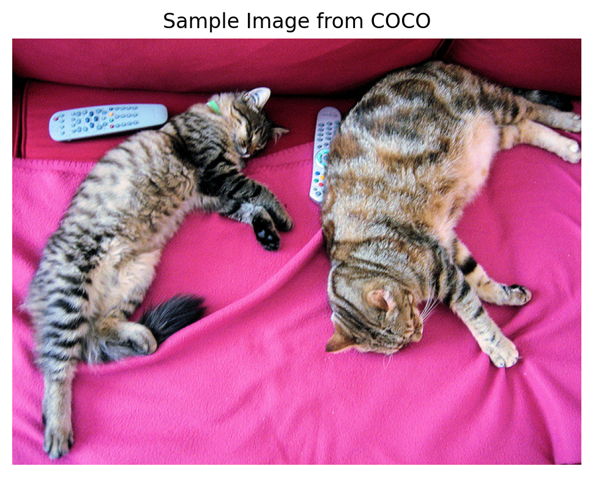
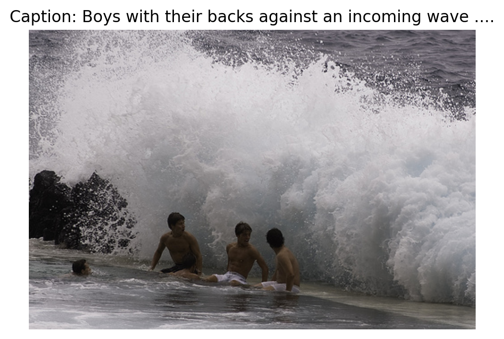
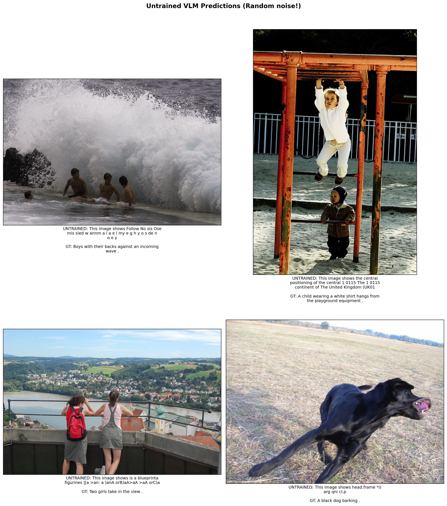
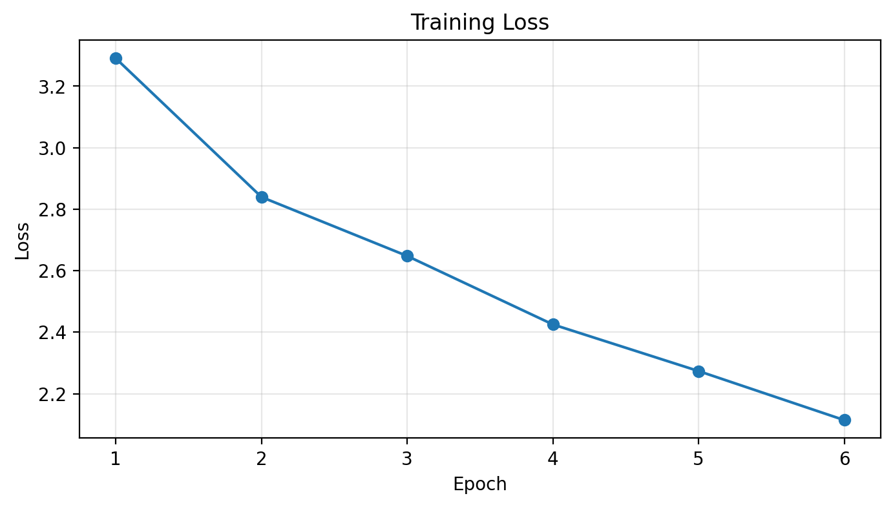
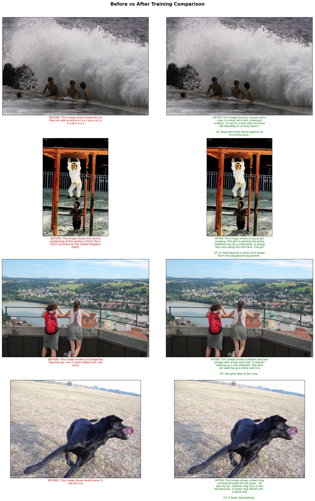
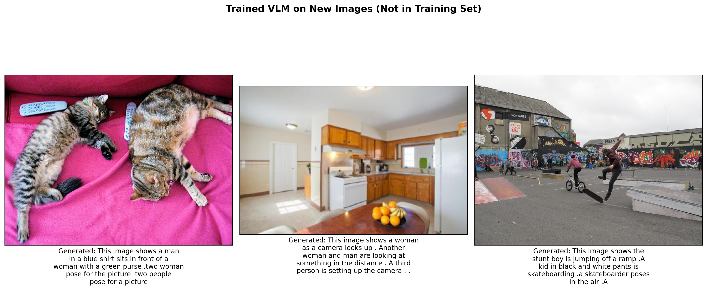
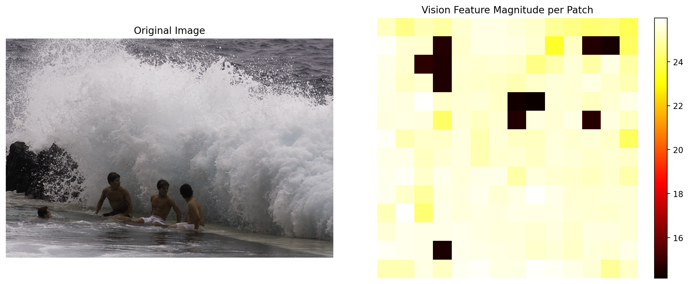

!uv pip install -q transformers datasets torch torchvision pillow accelerate einops timmIntroduction
Vision-Language Models (VLMs) have revolutionized how AI systems understand and reason about images. Models like GPT-4V, LLaVA, and Gemini can describe images, answer questions about them, and even follow complex visual instructions.
But how do these models actually work? At their core, VLMs combine three key components:
- Vision Encoder: Converts images into meaningful feature representations
- Projection Layer: Bridges the gap between vision and language embedding spaces
- Language Model: Generates text conditioned on the visual features
In this notebook, we’ll build a minimal VLM from scratch using small, publicly available models: - Vision: Google’s ViT-Base (86M parameters) - Language: HuggingFace’s SmolLM-135M (135M parameters) - Dataset: Flickr8k (a small subset for educational purposes)
The goal is educational - understanding the architecture, not building a production model.
Setup
import torch
import torch.nn as nn
import torch.nn.functional as F
from torch.utils.data import DataLoader, Dataset
from transformers import (
AutoModelForCausalLM,
AutoTokenizer,
ViTModel,
ViTImageProcessor,
)
from datasets import load_dataset
from PIL import Image
import requests
from io import BytesIO
import matplotlib.pyplot as plt
from tqdm.auto import tqdm
import warnings
warnings.filterwarnings('ignore')
device = torch.device("cuda" if torch.cuda.is_available() else "cpu")
print(f"Using device: {device}")Using device: cuda%config InlineBackend.figure_format = 'retina'Part 1: The Vision Encoder
The vision encoder’s job is to convert an image into a sequence of meaningful feature vectors. We’ll use a pretrained Vision Transformer (ViT) which:
- Splits the image into 16x16 patches
- Projects each patch into an embedding
- Processes patches through transformer layers
- Outputs a sequence of features (one per patch + a CLS token)
For a 224x224 image with 16x16 patches, we get: - (224/16) x (224/16) = 14 x 14 = 196 patches - Plus 1 CLS token = 197 tokens total - Each token has dimension 768 (for ViT-Base)
# Load pretrained ViT
vision_model_name = "google/vit-base-patch16-224"
vision_encoder = ViTModel.from_pretrained(vision_model_name)
image_processor = ViTImageProcessor.from_pretrained(vision_model_name)
# Freeze the vision encoder - we won't train it
for param in vision_encoder.parameters():
param.requires_grad = False
vision_encoder = vision_encoder.to(device)
vision_encoder.eval()
print(f"Vision encoder hidden size: {vision_encoder.config.hidden_size}")
print(f"Number of patches: {(224//16)**2} + 1 CLS token = {(224//16)**2 + 1} tokens")Some weights of ViTModel were not initialized from the model checkpoint at google/vit-base-patch16-224 and are newly initialized: ['pooler.dense.bias', 'pooler.dense.weight']
You should probably TRAIN this model on a down-stream task to be able to use it for predictions and inference.Vision encoder hidden size: 768
Number of patches: 196 + 1 CLS token = 197 tokens# Test the vision encoder with a sample image
url = "http://images.cocodataset.org/val2017/000000039769.jpg"
response = requests.get(url)
sample_image = Image.open(BytesIO(response.content))
plt.figure(figsize=(6, 6))
plt.imshow(sample_image)
plt.title("Sample Image from COCO")
plt.axis('off')
plt.show()
# Process the image
inputs = image_processor(sample_image, return_tensors="pt").to(device)
with torch.no_grad():
vision_outputs = vision_encoder(**inputs)
# Get the sequence of patch features (excluding pooler output)
image_features = vision_outputs.last_hidden_state
print(f"Image features shape: {image_features.shape}")
print(f" - Batch size: {image_features.shape[0]}")
print(f" - Sequence length (patches + CLS): {image_features.shape[1]}")
print(f" - Hidden dimension: {image_features.shape[2]}")
Image features shape: torch.Size([1, 197, 768])
- Batch size: 1
- Sequence length (patches + CLS): 197
- Hidden dimension: 768Part 2: The Language Model
For the language model, we’ll use SmolLM-135M - a tiny but capable language model from HuggingFace. It has: - 135M parameters (60x smaller than LLaMA-8B) - Hidden dimension of 576 - Can run on modest hardware
The key insight is that we need to project our vision features (768-dim) into the LLM’s embedding space (576-dim).
# Load the small language model
lm_model_name = "HuggingFaceTB/SmolLM-135M"
tokenizer = AutoTokenizer.from_pretrained(lm_model_name)
language_model = AutoModelForCausalLM.from_pretrained(lm_model_name)
# Add padding token if not present
if tokenizer.pad_token is None:
tokenizer.pad_token = tokenizer.eos_token
language_model = language_model.to(device)
print(f"Language model hidden size: {language_model.config.hidden_size}")
print(f"Vocabulary size: {language_model.config.vocab_size}")
print(f"Number of layers: {language_model.config.num_hidden_layers}")Language model hidden size: 576
Vocabulary size: 49152
Number of layers: 30# Test the language model
test_text = "A photo of"
inputs = tokenizer(test_text, return_tensors="pt").to(device)
with torch.no_grad():
outputs = language_model.generate(
**inputs,
max_new_tokens=20,
do_sample=True,
temperature=0.7,
pad_token_id=tokenizer.pad_token_id
)
print(f"Generated text: {tokenizer.decode(outputs[0], skip_special_tokens=True)}")Generated text: A photo of a woman in 1970Part 3: The Projection Layer
The projection layer is the bridge between vision and language. It transforms: - From: Vision features (batch, 197, 768) - To: Language-compatible embeddings (batch, 197, 576)
We’ll use a simple multi-layer projection with: 1. Linear layer (768 -> 576) 2. GELU activation 3. LayerNorm for stability
This is similar to what LLaVA uses, but simpler.
class VisionProjector(nn.Module):
"""Projects vision features into the language model's embedding space."""
def __init__(self, vision_dim: int, language_dim: int):
super().__init__()
self.projection = nn.Sequential(
nn.Linear(vision_dim, language_dim),
nn.GELU(),
nn.LayerNorm(language_dim),
nn.Linear(language_dim, language_dim), # Additional layer for better alignment
)
def forward(self, vision_features: torch.Tensor) -> torch.Tensor:
"""Project vision features to language embedding space.
Args:
vision_features: (batch, seq_len, vision_dim)
Returns:
projected: (batch, seq_len, language_dim)
"""
return self.projection(vision_features)
# Create projector
vision_dim = vision_encoder.config.hidden_size # 768
language_dim = language_model.config.hidden_size # 576
projector = VisionProjector(vision_dim, language_dim).to(device)
print(f"Projector: {vision_dim} -> {language_dim}")
print(f"Trainable parameters: {sum(p.numel() for p in projector.parameters()):,}")Projector: 768 -> 576
Trainable parameters: 776,448# Test the projector
with torch.no_grad():
projected_features = projector(image_features)
print(f"Original vision features: {image_features.shape}")
print(f"Projected features: {projected_features.shape}")Original vision features: torch.Size([1, 197, 768])
Projected features: torch.Size([1, 197, 576])Part 4: The Complete VLM Architecture
Now let’s combine everything into a single model. The forward pass:
- Encode image -> vision features (batch, 197, 768)
- Project -> language-space features (batch, 197, 576)
- Embed text -> text embeddings (batch, text_len, 576)
- Concatenate -> [image_embeds, text_embeds] (batch, 197 + text_len, 576)
- Generate -> use LLM to generate caption tokens
class MiniVLM(nn.Module):
"""A minimal Vision-Language Model."""
def __init__(
self,
vision_encoder: ViTModel,
language_model: AutoModelForCausalLM,
projector: VisionProjector,
tokenizer: AutoTokenizer,
):
super().__init__()
self.vision_encoder = vision_encoder
self.language_model = language_model
self.projector = projector
self.tokenizer = tokenizer
# Freeze vision encoder
for param in self.vision_encoder.parameters():
param.requires_grad = False
def encode_image(self, pixel_values: torch.Tensor) -> torch.Tensor:
"""Encode image and project to language space."""
with torch.no_grad():
vision_outputs = self.vision_encoder(pixel_values=pixel_values)
image_features = vision_outputs.last_hidden_state
projected = self.projector(image_features)
return projected
def forward(
self,
pixel_values: torch.Tensor,
input_ids: torch.Tensor,
attention_mask: torch.Tensor,
labels: torch.Tensor = None,
):
"""Forward pass for training.
Args:
pixel_values: Image tensor (batch, 3, 224, 224)
input_ids: Text token IDs (batch, text_len)
attention_mask: Attention mask for text (batch, text_len)
labels: Target token IDs for loss computation (batch, text_len)
"""
batch_size = pixel_values.shape[0]
# 1. Encode and project image
image_embeds = self.encode_image(pixel_values) # (batch, 197, hidden)
num_image_tokens = image_embeds.shape[1]
# 2. Get text embeddings from LLM's embedding layer
text_embeds = self.language_model.get_input_embeddings()(input_ids) # (batch, text_len, hidden)
# 3. Concatenate: [IMAGE TOKENS] [TEXT TOKENS]
combined_embeds = torch.cat([image_embeds, text_embeds], dim=1)
# 4. Create attention mask for combined sequence
image_attention = torch.ones(
(batch_size, num_image_tokens),
dtype=attention_mask.dtype,
device=attention_mask.device
)
combined_attention = torch.cat([image_attention, attention_mask], dim=1)
# 5. Create labels: -100 for image tokens (ignore in loss), actual labels for text
if labels is not None:
image_labels = torch.full(
(batch_size, num_image_tokens),
fill_value=-100, # -100 is ignored by CrossEntropyLoss
dtype=labels.dtype,
device=labels.device
)
combined_labels = torch.cat([image_labels, labels], dim=1)
else:
combined_labels = None
# 6. Forward through language model
outputs = self.language_model(
inputs_embeds=combined_embeds,
attention_mask=combined_attention,
labels=combined_labels,
return_dict=True,
)
return outputs
@torch.no_grad()
def generate(
self,
pixel_values: torch.Tensor,
max_new_tokens: int = 50,
temperature: float = 0.7,
do_sample: bool = True,
) -> str:
"""Generate a caption for an image."""
self.eval()
# Encode image
image_embeds = self.encode_image(pixel_values) # (1, 197, hidden)
# Start with a prompt
prompt = "This image shows"
prompt_ids = self.tokenizer.encode(prompt, return_tensors="pt").to(pixel_values.device)
prompt_embeds = self.language_model.get_input_embeddings()(prompt_ids)
# Combine image and prompt embeddings
combined_embeds = torch.cat([image_embeds, prompt_embeds], dim=1)
# Generate token by token
generated_ids = prompt_ids.clone()
for _ in range(max_new_tokens):
# Get current embeddings
current_embeds = self.language_model.get_input_embeddings()(generated_ids)
full_embeds = torch.cat([image_embeds, current_embeds], dim=1)
# Forward pass
outputs = self.language_model(inputs_embeds=full_embeds)
next_token_logits = outputs.logits[:, -1, :]
# Sample or greedy
if do_sample:
probs = F.softmax(next_token_logits / temperature, dim=-1)
next_token = torch.multinomial(probs, num_samples=1)
else:
next_token = next_token_logits.argmax(dim=-1, keepdim=True)
generated_ids = torch.cat([generated_ids, next_token], dim=1)
# Stop if EOS
if next_token.item() == self.tokenizer.eos_token_id:
break
return self.tokenizer.decode(generated_ids[0], skip_special_tokens=True)
# Create the VLM
vlm = MiniVLM(
vision_encoder=vision_encoder,
language_model=language_model,
projector=projector,
tokenizer=tokenizer,
)
vlm = vlm.to(device)
# Count parameters
total_params = sum(p.numel() for p in vlm.parameters())
trainable_params = sum(p.numel() for p in vlm.parameters() if p.requires_grad)
print(f"Total parameters: {total_params:,}")
print(f"Trainable parameters: {trainable_params:,}")
print(f"Frozen parameters: {total_params - trainable_params:,}")Total parameters: 221,680,704
Trainable parameters: 135,291,456
Frozen parameters: 86,389,248Part 5: Loading the Flickr8k Dataset
We’ll use a subset of the Flickr8k dataset - a popular image captioning benchmark with 8000 images. Each image has 5 captions - we’ll randomly sample one per image during training.
# Load Flickr8k captions dataset
dataset = load_dataset("jxie/flickr8k", split="train")
# Use 2000 samples for better training
num_samples = 2000
dataset = dataset.shuffle(seed=42).select(range(num_samples))
print(f"Dataset size: {len(dataset)}")
print(f"Sample item keys: {dataset[0].keys()}")Dataset size: 2000
Sample item keys: dict_keys(['image', 'caption_0', 'caption_1', 'caption_2', 'caption_3', 'caption_4'])# Look at a sample - Flickr8k has caption_0 through caption_4
sample = dataset[0]
print(f"Image: {type(sample['image'])}")
print(f"Captions:")
for i in range(5):
print(f" {i}: {sample[f'caption_{i}']}")
plt.figure(figsize=(6, 6))
plt.imshow(sample['image'])
plt.title(f"Caption: {sample['caption_0'][:60]}...")
plt.axis('off')
plt.show()Image: <class 'PIL.JpegImagePlugin.JpegImageFile'>
Captions:
0: Boys with their backs against an incoming wave .
1: Four boys are about to be hit by an approaching wave .
2: Four people sitting in the path of a wave .
3: Four young men are sitting on the beach under a crashing wave .
4: three boys sitting in sand getting splashed by wave
import random
class Flickr8kDataset(Dataset):
"""Dataset for Flickr8k image-caption pairs."""
def __init__(self, hf_dataset, image_processor, tokenizer, max_length=64):
self.dataset = hf_dataset
self.image_processor = image_processor
self.tokenizer = tokenizer
self.max_length = max_length
def __len__(self):
return len(self.dataset)
def __getitem__(self, idx):
item = self.dataset[idx]
# Process image
image = item['image'].convert('RGB')
pixel_values = self.image_processor(image, return_tensors="pt").pixel_values.squeeze(0)
# Randomly select one of the 5 captions
caption_idx = random.randint(0, 4)
caption = item[f'caption_{caption_idx}']
# Tokenize caption
encoding = self.tokenizer(
caption,
max_length=self.max_length,
padding='max_length',
truncation=True,
return_tensors='pt'
)
input_ids = encoding['input_ids'].squeeze(0)
attention_mask = encoding['attention_mask'].squeeze(0)
# Labels: mask padding tokens with -100
labels = input_ids.clone()
labels[attention_mask == 0] = -100
return {
'pixel_values': pixel_values,
'input_ids': input_ids,
'attention_mask': attention_mask,
'labels': labels,
}
# Create dataset and dataloader
train_dataset = Flickr8kDataset(dataset, image_processor, tokenizer)
train_loader = DataLoader(
train_dataset,
batch_size=4, # Small batch for memory
shuffle=True,
num_workers=0, # Avoid multiprocessing issues
)
print(f"Number of batches: {len(train_loader)}")Number of batches: 500# Test a batch
batch = next(iter(train_loader))
print(f"Batch pixel_values shape: {batch['pixel_values'].shape}")
print(f"Batch input_ids shape: {batch['input_ids'].shape}")
print(f"Batch labels shape: {batch['labels'].shape}")Batch pixel_values shape: torch.Size([4, 3, 224, 224])
Batch input_ids shape: torch.Size([4, 64])
Batch labels shape: torch.Size([4, 64])Part 6: Untrained Model Predictions (Baseline)
Before training, let’s see what our VLM generates. Since the projection layer has random weights, the model has no way to understand the image - it will just generate random/nonsensical text. This establishes a baseline to appreciate the improvement after training.
# Store some test images and their ground truth captions for before/after comparison
test_indices = [0, 10, 50, 100]
test_samples = [(dataset[i]['image'].convert('RGB'), dataset[i]['caption_0']) for i in test_indices]
# Generate captions with UNTRAINED model
print("=" * 60)
print("UNTRAINED MODEL PREDICTIONS (Random projector weights)")
print("=" * 60)
untrained_captions = []
for i, (image, gt_caption) in enumerate(test_samples):
caption, _ = generate_caption(vlm, image, image_processor, device)
untrained_captions.append(caption)
print(f"\nImage {i+1}:")
print(f" Generated: {caption}")
print(f" GT: {gt_caption[:80]}...")============================================================
UNTRAINED MODEL PREDICTIONS (Random projector weights)
============================================================
Image 1:
Generated: This image shows Follow No sis Ose mis sied w annm a l a e l my e g h y o s de n o o y
GT: Boys with their backs against an incoming wave ....
Image 2:
Generated: This image shows the central positioning of the central 1 0115 The 1 0115 continent of The United Kingdom (UK01
GT: A child wearing a white shirt hangs from the playground equipment ....
Image 3:
Generated: This image shows is a blueprinta figurines |[a >an: a )anA orB)aA>aA >aA orC)a
GT: Two girls take in the view ....
Image 4:
Generated: This image shows head.frame *i) arg qni cl.p
GT: A black dog barking ....# Visualize the untrained predictions
import textwrap
def wrap_text(text, width=40):
"""Wrap text for better display in titles."""
return '\n'.join(textwrap.wrap(text, width=width))
fig, axes = plt.subplots(2, 2, figsize=(14, 16))
axes = axes.flatten()
for i, ((image, gt_caption), ax) in enumerate(zip(test_samples, axes)):
ax.imshow(image)
# Create wrapped title text
gen_text = wrap_text(f"UNTRAINED: {untrained_captions[i]}", 45)
gt_text = wrap_text(f"GT: {gt_caption}", 45)
ax.set_xlabel(f"{gen_text}\n\n{gt_text}", fontsize=9, ha='center')
ax.set_xticks([])
ax.set_yticks([])
plt.suptitle("Untrained VLM Predictions (Random noise!)", fontsize=14, fontweight='bold', y=1.02)
plt.tight_layout()
plt.show()
Part 7: Training Loop
Now let’s train our VLM! We’ll only train: 1. The projection layer (bridges vision to language) 2. The language model (learns to generate captions)
The vision encoder stays frozen.
def train_vlm(model, train_loader, num_epochs=3, lr=1e-4):
"""Train the VLM."""
# Only optimize trainable parameters
trainable_params = [p for p in model.parameters() if p.requires_grad]
optimizer = torch.optim.AdamW(trainable_params, lr=lr)
model.train()
# But keep vision encoder in eval mode
model.vision_encoder.eval()
losses = []
for epoch in range(num_epochs):
epoch_loss = 0
progress_bar = tqdm(train_loader, desc=f"Epoch {epoch+1}/{num_epochs}")
for batch in progress_bar:
# Move batch to device
pixel_values = batch['pixel_values'].to(device)
input_ids = batch['input_ids'].to(device)
attention_mask = batch['attention_mask'].to(device)
labels = batch['labels'].to(device)
# Forward pass
outputs = model(
pixel_values=pixel_values,
input_ids=input_ids,
attention_mask=attention_mask,
labels=labels,
)
loss = outputs.loss
# Backward pass
optimizer.zero_grad()
loss.backward()
torch.nn.utils.clip_grad_norm_(trainable_params, max_norm=1.0)
optimizer.step()
epoch_loss += loss.item()
progress_bar.set_postfix({'loss': f"{loss.item():.4f}"})
avg_loss = epoch_loss / len(train_loader)
losses.append(avg_loss)
print(f"Epoch {epoch+1} - Average Loss: {avg_loss:.4f}")
return losses# Train for more epochs with larger dataset
losses = train_vlm(vlm, train_loader, num_epochs=6, lr=2e-4)Epoch 1/6: 100%|██████████| 500/500 [02:09<00:00, 3.87it/s, loss=3.1899]Epoch 1 - Average Loss: 3.2901Epoch 2/6: 100%|██████████| 500/500 [02:09<00:00, 3.87it/s, loss=3.0506]Epoch 2 - Average Loss: 2.8393Epoch 3/6: 100%|██████████| 500/500 [02:09<00:00, 3.85it/s, loss=2.5294]Epoch 3 - Average Loss: 2.6476Epoch 4/6: 100%|██████████| 500/500 [02:09<00:00, 3.85it/s, loss=2.2143]Epoch 4 - Average Loss: 2.4250Epoch 5/6: 100%|██████████| 500/500 [02:09<00:00, 3.86it/s, loss=2.3503]Epoch 5 - Average Loss: 2.2734Epoch 6/6: 100%|██████████| 500/500 [02:09<00:00, 3.85it/s, loss=2.1538]Epoch 6 - Average Loss: 2.1140# Plot training loss
plt.figure(figsize=(8, 4))
plt.plot(range(1, len(losses)+1), losses, marker='o')
plt.xlabel('Epoch')
plt.ylabel('Loss')
plt.title('Training Loss')
plt.grid(True, alpha=0.3)
plt.show()
Part 8: Trained Model Predictions - Before vs After!
Let’s compare the untrained vs trained model on the same images. You should see a dramatic improvement!
# Generate captions with TRAINED model on the same test images
print("=" * 60)
print("TRAINED MODEL PREDICTIONS (After training)")
print("=" * 60)
trained_captions = []
for i, (image, gt_caption) in enumerate(test_samples):
caption, _ = generate_caption(vlm, image, image_processor, device)
trained_captions.append(caption)
print(f"\nImage {i+1}:")
print(f" BEFORE (untrained): {untrained_captions[i]}")
print(f" AFTER (trained): {caption}")
print(f" Ground Truth: {gt_caption[:80]}...")============================================================
TRAINED MODEL PREDICTIONS (After training)
============================================================
Image 1:
BEFORE (untrained): This image shows Follow No sis Ose mis sied w annm a l a e l my e g h y o s de n o o y
AFTER (trained): This image shows a sunset and a man in a blue shirt with a batman uniform .A man in a blue shirt and blue hat standing on a rocky beach .
Ground Truth: Boys with their backs against an incoming wave ....
Image 2:
BEFORE (untrained): This image shows the central positioning of the central 1 0115 The 1 0115 continent of The United Kingdom (UK01
AFTER (trained): This image shows a young girl jumping .The girl is wearing the same collarless top as a underwear .A young boy runs along the red track .The girl
Ground Truth: A child wearing a white shirt hangs from the playground equipment ....
Image 3:
BEFORE (untrained): This image shows is a blueprinta figurines |[a >an: a )anA orB)aA>aA >aA orC)a
AFTER (trained): This image shows a woman and two people with a wall and scarf .A woman walking on a city sidewalk .Two girls are walking up a stone wall in a
Ground Truth: Two girls take in the view ....
Image 4:
BEFORE (untrained): This image shows head.frame *i) arg qni cl.p
AFTER (trained): This image shows a black dog running through the tall grass . Its ears fly up . Another dog runs in the background . a brown dog stands still . a black dog
Ground Truth: A black dog barking ....# Side-by-side visual comparison: BEFORE vs AFTER training
fig, axes = plt.subplots(4, 2, figsize=(16, 24))
for i, (image, gt_caption) in enumerate(test_samples):
# Left column: Untrained
axes[i, 0].imshow(image)
untrained_text = wrap_text(f"BEFORE: {untrained_captions[i]}", 40)
axes[i, 0].set_xlabel(untrained_text, fontsize=9, color='red', ha='center')
axes[i, 0].set_xticks([])
axes[i, 0].set_yticks([])
# Right column: Trained
axes[i, 1].imshow(image)
trained_text = wrap_text(f"AFTER: {trained_captions[i]}", 40)
gt_text = wrap_text(f"GT: {gt_caption}", 40)
axes[i, 1].set_xlabel(f"{trained_text}\n\n{gt_text}", fontsize=9, color='green', ha='center')
axes[i, 1].set_xticks([])
axes[i, 1].set_yticks([])
plt.suptitle("Before vs After Training Comparison", fontsize=16, fontweight='bold', y=1.01)
plt.tight_layout()
plt.show()
# Test on completely new images from the web (not in training set)
test_urls = [
"http://images.cocodataset.org/val2017/000000039769.jpg", # cats
"http://images.cocodataset.org/val2017/000000037777.jpg", # sports
"http://images.cocodataset.org/val2017/000000087038.jpg", # food
]
fig, axes = plt.subplots(1, 3, figsize=(15, 6))
for url, ax in zip(test_urls, axes):
caption, image = generate_caption(vlm, url, image_processor, device)
ax.imshow(image)
caption_text = wrap_text(f"Generated: {caption}", 35)
ax.set_xlabel(caption_text, fontsize=10, ha='center')
ax.set_xticks([])
ax.set_yticks([])
plt.suptitle("Trained VLM on New Images (Not in Training Set)", fontsize=14, fontweight='bold', y=1.02)
plt.tight_layout()
plt.show()
Part 9: Understanding the Architecture
Let’s visualize what’s happening inside our VLM:
# Visualize the flow of information
sample = dataset[0]
image = sample['image'].convert('RGB')
pixel_values = image_processor(image, return_tensors="pt").pixel_values.to(device)
with torch.no_grad():
# Step 1: Vision encoding
vision_outputs = vlm.vision_encoder(pixel_values=pixel_values)
vision_features = vision_outputs.last_hidden_state
print(f"Step 1 - Vision Encoder Output: {vision_features.shape}")
print(f" Shape meaning: (batch={vision_features.shape[0]}, patches={vision_features.shape[1]}, dim={vision_features.shape[2]})")
# Step 2: Projection
projected = vlm.projector(vision_features)
print(f"\nStep 2 - After Projection: {projected.shape}")
print(f" Shape meaning: (batch={projected.shape[0]}, patches={projected.shape[1]}, lm_dim={projected.shape[2]})")
# Step 3: Text embedding (example)
sample_text = "A photo of"
text_ids = tokenizer.encode(sample_text, return_tensors="pt").to(device)
text_embeds = vlm.language_model.get_input_embeddings()(text_ids)
print(f"\nStep 3 - Text Embeddings: {text_embeds.shape}")
print(f" Shape meaning: (batch={text_embeds.shape[0]}, tokens={text_embeds.shape[1]}, lm_dim={text_embeds.shape[2]})")
# Step 4: Concatenation
combined = torch.cat([projected, text_embeds], dim=1)
print(f"\nStep 4 - Combined Embeddings: {combined.shape}")
print(f" Total sequence: {projected.shape[1]} image tokens + {text_embeds.shape[1]} text tokens = {combined.shape[1]}")Step 1 - Vision Encoder Output: torch.Size([1, 197, 768])
Shape meaning: (batch=1, patches=197, dim=768)
Step 2 - After Projection: torch.Size([1, 197, 576])
Shape meaning: (batch=1, patches=197, lm_dim=576)
Step 3 - Text Embeddings: torch.Size([1, 3, 576])
Shape meaning: (batch=1, tokens=3, lm_dim=576)
Step 4 - Combined Embeddings: torch.Size([1, 200, 576])
Total sequence: 197 image tokens + 3 text tokens = 200# Visualize attention over patches (simplified)
# This shows which patches the model might be attending to
# Get patch features (excluding CLS token)
patch_features = vision_features[0, 1:, :] # Remove CLS token
patch_norms = torch.norm(patch_features, dim=-1) # Feature magnitude per patch
# Reshape to 14x14 grid
patch_grid = patch_norms.reshape(14, 14).cpu().numpy()
fig, (ax1, ax2) = plt.subplots(1, 2, figsize=(12, 5))
ax1.imshow(image)
ax1.set_title("Original Image")
ax1.axis('off')
im = ax2.imshow(patch_grid, cmap='hot')
ax2.set_title("Vision Feature Magnitude per Patch")
ax2.axis('off')
plt.colorbar(im, ax=ax2, fraction=0.046)
plt.tight_layout()
plt.show()
Part 10: Save Model for Future Use
Let’s save the trained model so we can use it in future notebooks (e.g., for instruction fine-tuning or object detection tasks).
import os
# Create directory for saving the model
save_dir = "mini-vlm-flickr8k"
os.makedirs(save_dir, exist_ok=True)
# Save the projector weights (the main trained component)
torch.save(vlm.projector.state_dict(), f"{save_dir}/projector.pt")
# Save the full VLM state dict (projector + language model weights)
torch.save({
'projector_state_dict': vlm.projector.state_dict(),
'language_model_state_dict': vlm.language_model.state_dict(),
'config': {
'vision_model_name': vision_model_name,
'lm_model_name': lm_model_name,
'vision_dim': vision_dim,
'language_dim': language_dim,
}
}, f"{save_dir}/mini_vlm_full.pt")
# Also save the tokenizer and image processor config for easy loading
tokenizer.save_pretrained(f"{save_dir}/tokenizer")
image_processor.save_pretrained(f"{save_dir}/image_processor")
print(f"Model saved to {save_dir}/")
print(f"Contents: {os.listdir(save_dir)}")Model saved to mini-vlm-flickr8k/
Contents: ['tokenizer', 'projector.pt', 'mini_vlm_full.pt', 'image_processor']# Helper function to load the model (useful for next notebook)
def load_mini_vlm(save_dir, device='cuda'):
"""Load the saved MiniVLM model."""
from transformers import AutoModelForCausalLM, AutoTokenizer, ViTModel, ViTImageProcessor
# Load checkpoint
checkpoint = torch.load(f"{save_dir}/mini_vlm_full.pt", map_location=device)
config = checkpoint['config']
# Recreate components
vision_encoder = ViTModel.from_pretrained(config['vision_model_name'])
language_model = AutoModelForCausalLM.from_pretrained(config['lm_model_name'])
tokenizer = AutoTokenizer.from_pretrained(f"{save_dir}/tokenizer")
image_processor = ViTImageProcessor.from_pretrained(f"{save_dir}/image_processor")
# Recreate projector and load weights
projector = VisionProjector(config['vision_dim'], config['language_dim'])
projector.load_state_dict(checkpoint['projector_state_dict'])
# Load language model weights
language_model.load_state_dict(checkpoint['language_model_state_dict'])
# Create VLM
vlm = MiniVLM(vision_encoder, language_model, projector, tokenizer)
vlm = vlm.to(device)
return vlm, image_processor, tokenizer
print("Helper function 'load_mini_vlm' defined for loading in future notebooks.")Helper function 'load_mini_vlm' defined for loading in future notebooks.Summary
We built a minimal Vision-Language Model with three key components:
| Component | Model | Parameters | Trainable |
|---|---|---|---|
| Vision Encoder | ViT-Base-16-224 | 86M | No (frozen) |
| Projection | 2-layer MLP | ~1M | Yes |
| Language Model | SmolLM-135M | 135M | Yes |
Key Takeaways
- Architecture: VLMs combine vision encoders and language models with a projection layer
- Training: We freeze the vision encoder and train only the projector + LLM
- Data: Image-caption pairs (Flickr8k) teach the model to describe images
- Scaling: Production VLMs use larger models and much more data
Limitations of This Minimal Model
- Small training set (2000 images) vs millions in production
- Simple projection (MLP) vs sophisticated cross-attention mechanisms
- No instruction tuning for chat-like interactions
- No visual grounding or object detection capabilities
Next Steps
In the next blog post, we’ll take this trained VLM and: 1. Instruction fine-tune it on object detection data 2. Teach it to respond to questions like “What objects are in this image?” 3. Explore visual grounding capabilities
The saved model is in mini-vlm-flickr8k/ and can be loaded with load_mini_vlm().